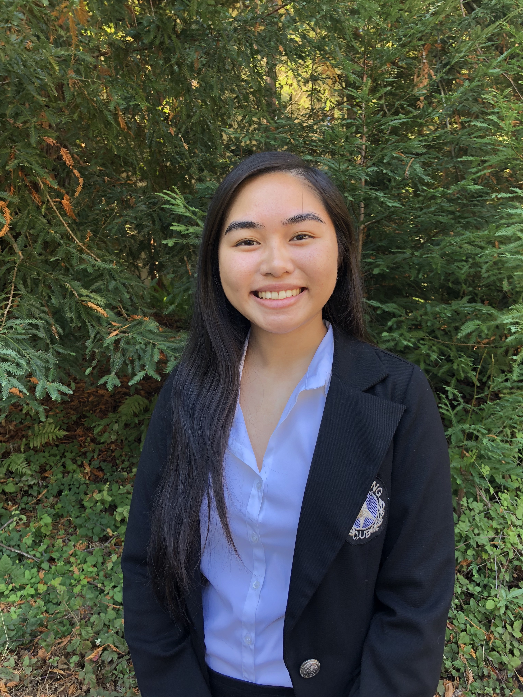
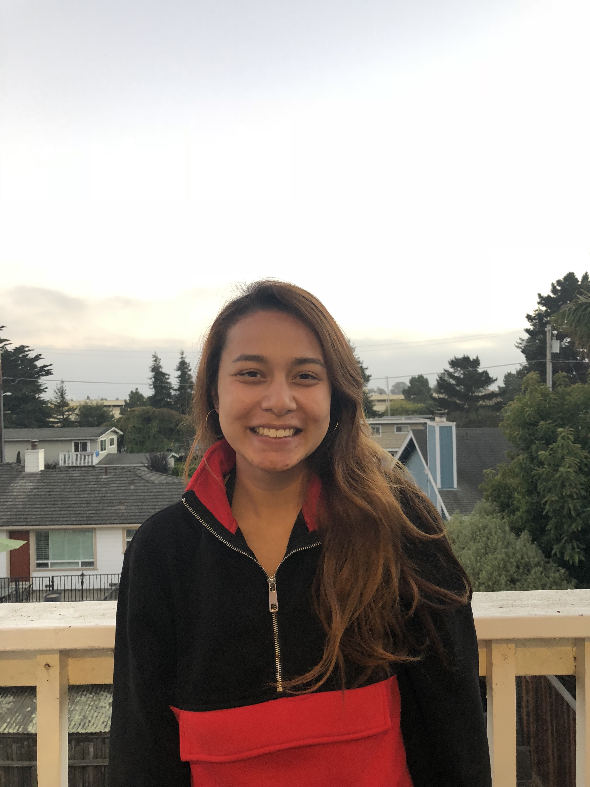

Eileen Nguyen
President
Major : MCD Biology
Favorite Inspirational Quote : "The reality is: sometimes you lose. And you’re never too good to lose. You’re never too big to lose. You’re never too smart to lose. It happens." -Beyoncé
Fun Fact : I started a blog that has yet to be published!
Eileen Nguyen
President
Major : MCD Biology
Favorite Inspirational Quote : "The reality is: sometimes you lose. And you’re never too good to lose. You’re never too big to lose. You’re never too smart to lose. It happens." -Beyoncé
Fun Fact : I started a blog that has yet to be published!

Diana Etwaru
Vice President
Major : Neuroscience
Favorite Inspirational Quote : “A mind troubled by doubt cannot focus on the course of victory.” -Arthur Golden, Memoirs of a Geisha
Fun Fact : I love to bullet journal!
Diana Etwaru
Vice President
Major : Neuroscience
Favorite Inspirational Quote : “A mind troubled by doubt cannot focus on the course of victory.” -Arthur Golden, Memoirs of a Geisha
Fun Fact : I love to bullet journal!
Johnny Ha
Secretary
Major : MCD Biology
Favorite Inspirational Quote : "The finish line is never set to be seen, it's for you to create your own."
Fun Fact: My inspirational quote was written by yours truly!

Khanh Nguyen
Treasurer
Major : Biochemistry
Favorite Inspirational Quote : "The future belongs to those who believe in the beauty of their dreams." -Franklin D. Roosevelt
Fun Fact: I used to play badminton!
Kathy Voong
Public Relations
Major : MCD Biology
Favorite Inspirational Quote : "Water, earth, air, fire."
Fun Fact: I believe Aang can save the world.